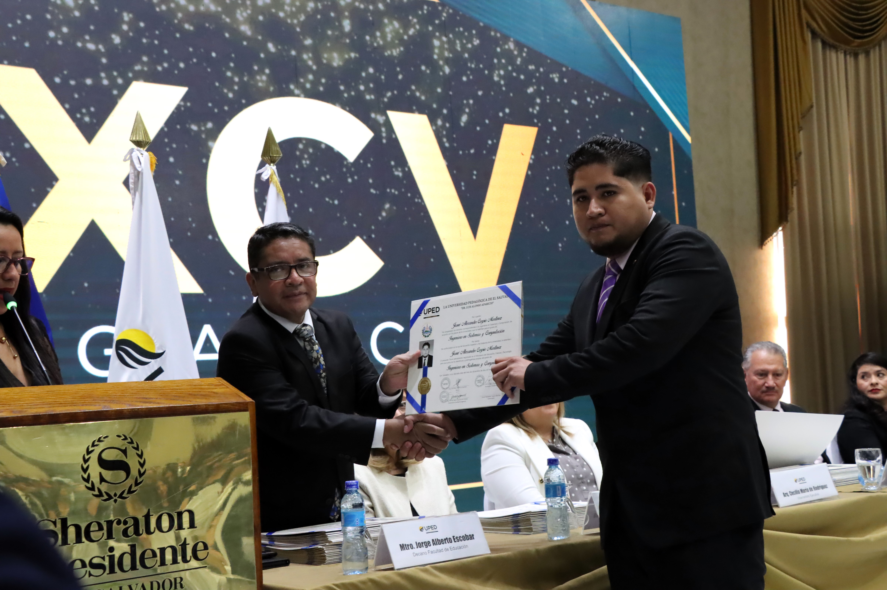
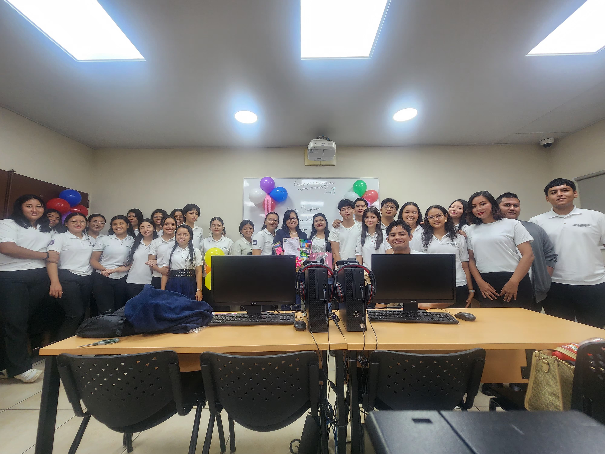
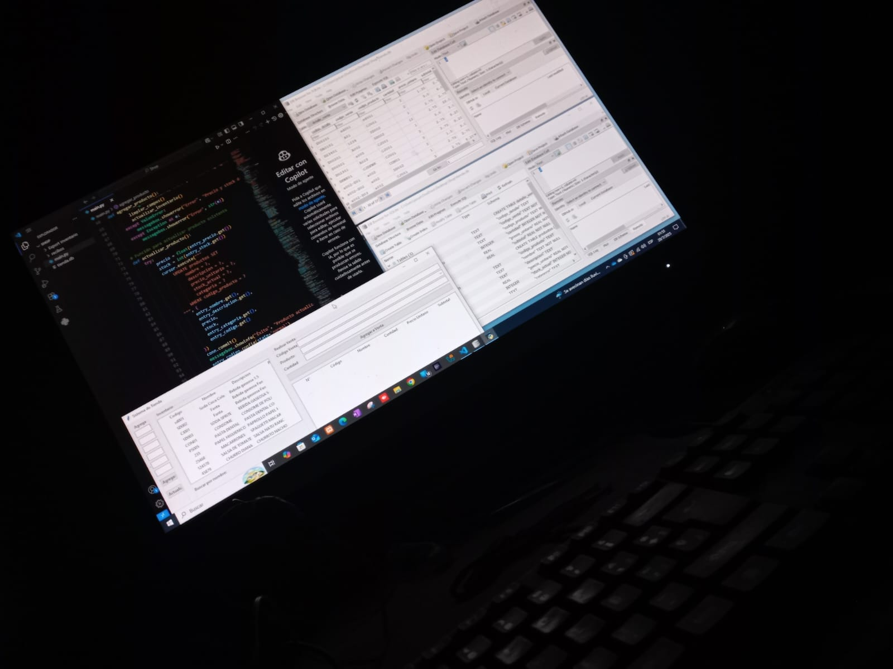

Josue Alexander Carpio Martinez
I am a systems and computer engineer with experience in software development and databases gained during my internship. I have worked with Python, JavaScript, HTML, CSS, and MySQL. I am motivated to learn continuously and take on new technological challenges to improve my skills.
academic achievements
I studied a Technical Degree in Accounting at Instituto Católico Palestino. In December of last year, I completed my Bachelor’s degree in Systems and Computer Engineering at Universidad Pedagógica de El Salvador. Additionally, this year I pursued English language studies at Centro de Formación Técnica Jorge Elías Bahaia Gueragosian.


My skills
Providing support to internal and external clients; offering technical support and preventative maintenance for computer equipment and servers; configuring and preparing computer systems (installing Windows 11, assigning IP addresses, joining domains, and installing corporate software such as Microsoft Office); basic user administration using Active Directory; managing operational information with Oracle Cloud Hospitality; performing general administrative tasks and supporting operational processes; proficient in Python and JavaScript, including developing a point-of-sale (POS) system for a family business, focused on inventory control and daily sales tracking. These skills were developed through professional experience and practical projects at Quality Hotel, UPS, and personal ventures.


.jpeg)
Soft Skills
I have strong soft skills focused on service and collaboration, including customer service with a professional approach, clear and effective communication with non-technical users, and strong problem-solving abilities. I am well organized, able to manage my time efficiently, and work effectively in team environments, with a proven ability to learn quickly and adapt to new tools, technologies, and work settings.